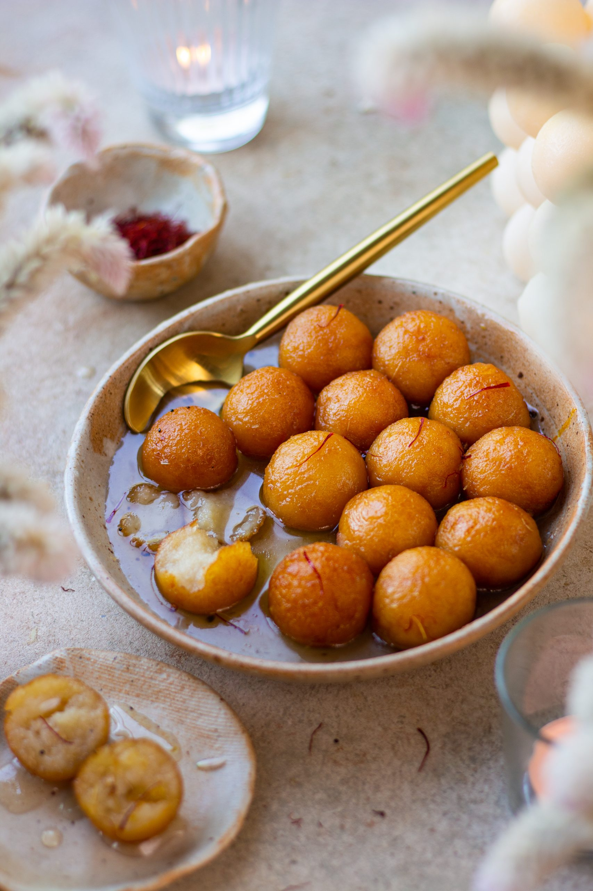

Gulab Jamun
Ingredients
- 300 gms Khoya
- 3 Tbsp flour
- 3 Tbsp sugar
- 1/2 liter water
- Saffron, a pinch
- 200 gms refined oil
Recipe
- In a bowl, add khoya and flour mix them together.
- Make a round ball shape gulab jamun out of it.
- Make sugar syrup with 3 table spoon of sugar and 1/2 liter water.Add little saffron to it.
- Deep fry the gulab jamun in pan with oil.
- Add the fried gulab jamun into the sugar syrup.
- Serve hot.

Barfi
Ingredients
- 2.5 cup milk powder
- 3/4 cup sugar
- 1 cup milk
- 1/4 cup ghee
- 3 tbsp pistachios
Recipe
- Firstly, in a bowl take 2½ cup milk powder, ¾ cup sugar and 1 cup milk.
- Whisk and mix well until everything is well combined.
- Transfer the mixture into large kadai. recommend using nonstick pan to prevent from sticking
- Also add ¼ cup ghee and mix well on low flame.
- Keep stirring on low flame until the mixture thickens.
- The mixture will hold the shape and starts to separate the pan after 10 minutes.
- Do not overcook, as the burfi will turn hard. and if the mixture is undercooked then it turns chewy.
- Transfer the burfi dough into the tray lined with baking paper.
- Press gently, making sure its leveled up.
- Top with few chopped pistachios and press gently.
- Cover and refrigerate for 1 hour or until it sets completely.
- After 1 hour, unmould the burfi and cut with sharp knife.
- Finally, milk burfi recipe tastes great for a week when stored in an airtight container.